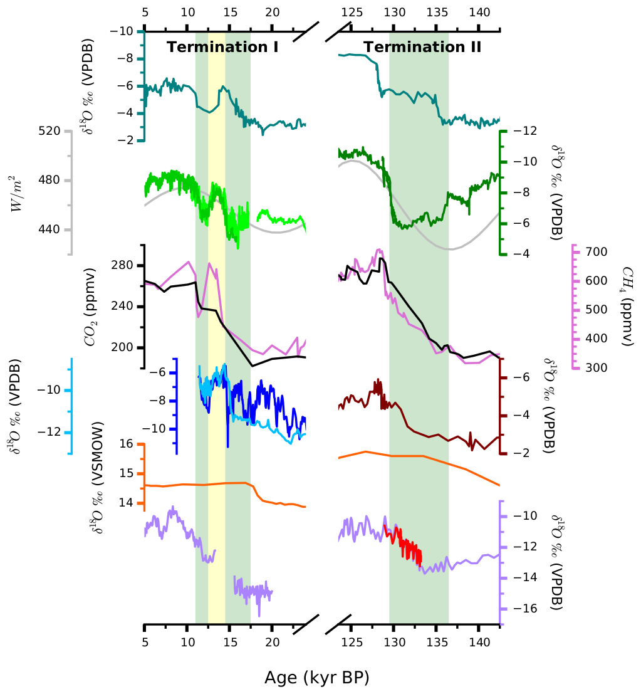

Entry 15¶
Records of Past Climate Change¶
Mellissa Warner
Investigating the timing, nature, and drivers of past climate change can help us understand the trajectory of our globally warming world. To this end, paleoclimatologists date and analyze a variety of climate proxies, such as ice cores and speleothems (cave formations). The resulting data is placed in temporal and geographic context by plotting against other global and regional records.
The most striking features of these records are periodic, large, often abrupt changes in temperature, moisture, or other climate parameters that occur more or less synchronously around the globe, correlating to the end of glacial intervals. According to Milankovitch theory, glacial cycles are paced by Earth’s orbital parameters- obliquity, eccentricity, and precession- each of which have their own periodicity and together influence the amount and intensity of solar radiation (or insolation, gray) received during Northern Hemisphere summer at the Earth’s surface (usually a particular latitude, 65 degrees N, is examined). Deglaciations, or terminations, begin when boreal insolation is low and rising, and large continental ice sheets meet certain conditions. Our current understanding of terminations is that once initiated, rising insolation and increasing concentrations of greenhouse gases, like methane (pink) and particularly carbon dioxide (black), together drive the deglaciation to completion.
However, as we can see in the differences among the regional expressions of each termination, there is additional complexity. Large ice rafting events (Heinrich Events) in the North Atlantic occur during glacials and are also associated with terminations. These events significantly alter ocean and atmospheric circulation for intervals of time referred to as Heinrich Stadials. During Termination II, for example, several records, such as the Chinese (green) speleothem delta 18-O (oxygen isotopic composition of calcite) record of the Asian Summer Monsoon, are clearly influenced by Heinrich Stadial 11 (136 – 129 kyr, green bar), while others, like Nevada speleothem oxygen isotope records (purple, bright red), more closely follow insolation and greenhouse gases. Different isotopic/chemical systems in speleothems record different climate parameters, allowing us to form a more complete picture of regional climate and atmospheric circulation changes associated with terminations and/or North Atlantic events. Another Nevada climate record, the Devils Hole vein calcite record (orange), had long puzzled paleoclimatologists by its apparent early terminations. A recent study demonstrates these anomalies are due to changing water chemistry with depth.
Dissimilarities between the structures of each deglaciation also provide important information. Termination I is more complicated than Termination II, and in many regions was interrupted by excursions to interstadial (warmer) conditions (yellow bar) followed by a return to stadial (cooler) conditions (green bar) before completion. This may be due at least in part to the slower rate of insolation rise during Termination I relative to Termination II.
This plot was created using [TrendVis](https://github.com/matplotlib/trendvis). All data in this plot are publicly available at the [National Climatic Data Center](http://www.ncdc.noaa.gov/data-access/paleoclimatology-data/datasets).
Code and data: 1